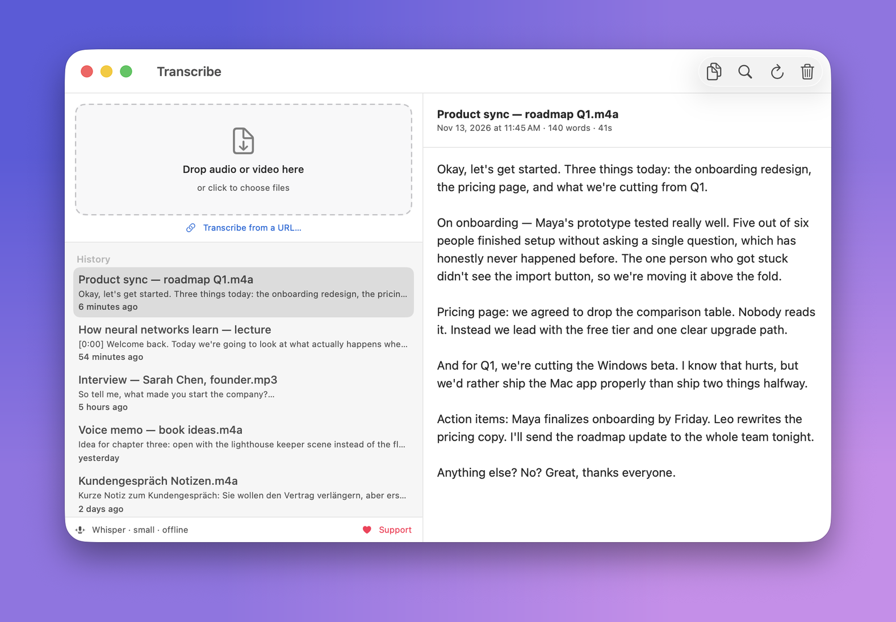
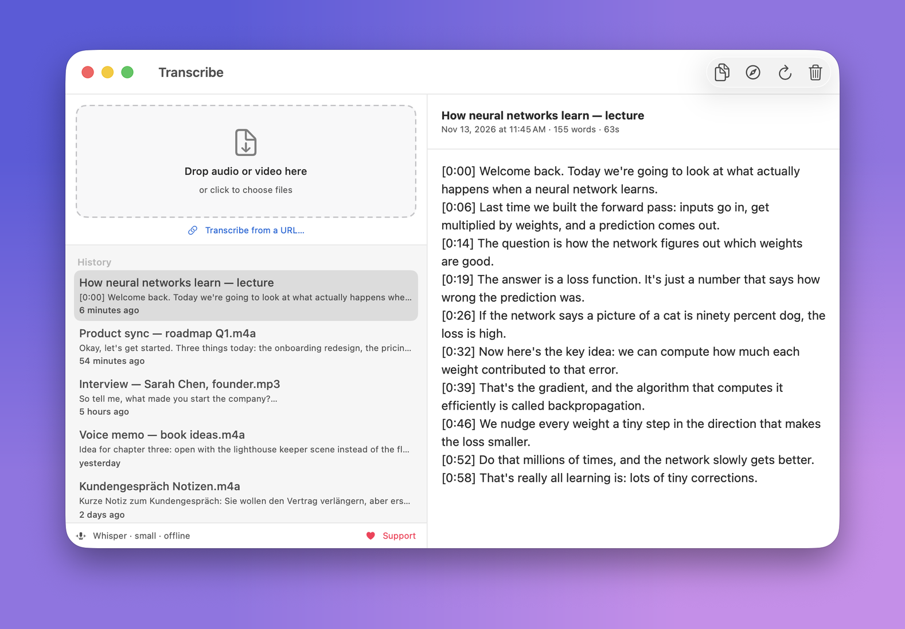

Private, on-device transcription for your Mac. Drop in audio or video — get text out. Nothing is uploaded.
Apple Silicon · macOS 14+ · free & open source

Drop a file, get the text. Every transcript stays in your history, on your Mac.
curl -fsSL https://raw.githubusercontent.com/J3012B/Transcribe_Mac/main/install.sh | bash
Paste a YouTube (or other video) URL and get a transcript with [m:ss] timestamps: handy for lectures, talks and interviews. The audio is fetched, then transcribed locally like everything else.

Transcribe is free, open source and has no ads, accounts or tracking, and it'll stay that way. If it saves you time, a small contribution keeps it maintained.
♥ Donate